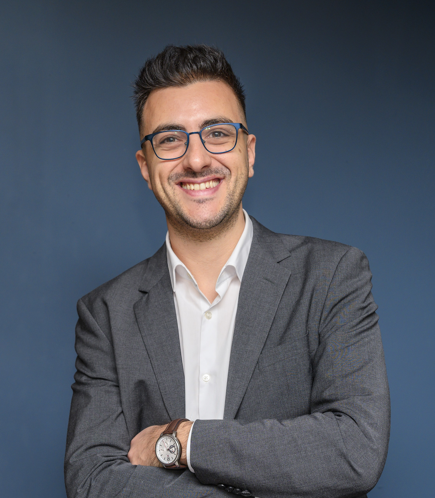

I am an Assistant Professor at
University College Dublin (UCD), Ireland.
My research is primarily focused on the mathematical modelling, stability
analysis, and control of electric power systems.
Interested in working together?
Get in touch! Interested in opportunities to join my team?
Check here!
I grew up in Platanorema, a small village in Northern Greece. I received the Diploma (ME) in
Electrical and Computer Engineering from the
National Technical
University of Athens (NTUA) in 2017, and the PhD in
Electrical and Electronic Engineering from UCD in 2021.
In Jan.-Apr. 2020, I was a visiting researcher at
Northeastern Univ., Boston, MA. From 2021 to 2023, I was a Postdoctoral Researcher
with UCD (2021-2022) and
ETH Zürich (2022-2023).
I joined UCD as faculty in Apr. 2023.
I have co-authored more than 50 scientific
publications, including
more than 30 articles in academic journals, as well as papers in international conference
proceedings, technical reports, book chapters, and the book "Eigenvalue Problems
in Power Systems" with CRC Press. I am the Technical Committee Program Chair of
the Power System Dynamic Performance Committee of IEEE Power and Energy Society.